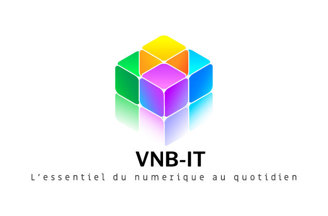

Bonjour,
Je suis GAFAROU SADATE
JUNIOR
Etudiant en BTS
SIO option SISR
BTS SIO C EST QUOI ?
A propos

Je suis GAFAROU SADATE JUNIOR
Etudiant actuellement en 2eme année de Brevet de Technicien Supérieur en initial dans le domaine du Service Informatiques aux Organisation en option Solutions d'Infrastructure, Systèmes et Réseaux (BTS SIO SISR). J'effectue ma formation à l'Institut IEF2I à vincennes. J'ai développé ce portfolio dans le but de vous présenter mon parcours professionnel, mes compétences, mes projets ansi que ma veille technologique. Tout au long de ma formation, j’ai été amenée à valider diverses compétences grâce à mes stages effectués en entreprise, mes deux projets personnels encadrés mais également le travail que j’ai fourni personnellement pendant ces deux années. Un récapitulatif des compétences que j’ai acquises est disponible au format PDF sous forme d’un tableau de compétence..
Epreuve E4
Ici, les Projets Personnalisés Encadrés réalisés en formation et en entreprise ainsi que le tableau de synthèse contentant les compétences acquises. Cliquez sur "compte rendu" de chaque travaux pratiques souhaités pour l’ouvrir.

Mission 5: mettre en place du NAT à l’aide du simulateur Cisco PacketTracer afin d’étudier le fonctionnement du protocole NAT.
Compte rendu
Mission 7:Mise en place de OSPF (Open-Shortest Path First) est un protocole de routage dynamique à état de lien basé sur l’algorithme SFP utilisé pour trouver les meilleures routes.
Compte rendu
Situations vécues en stages de 2eme année
Présentation de L'Entreprise d'Accueil
VNB-IT votre prestataire informatique VNB-IT est une société de services en ingénierie informatique (SSII) implantée en Ile-de-France depuis 2022, existant depuis 2020. C’est un projet d’enfance devenue réalité. VNB-IT est sur le marché des Entreprises de Services du Numérique (ESN,) une icône de l’expérience utilisateur qui met le Service desk et l’innovation au service des directions IT et métiers en pleine transformation digitale. Spécialiste de : Conseil, Intégration, Industrialisation, Sécurité – Services – Systèmes, Déploiement, Infogérance – Maintenance et Sécurité Digitale ; Service desk, ITIL, infogérance, Business desk, IT et Service Management. Son fondateur Berniche NGOMA est parti sur la base d’un constat simple : la plupart des TPE-PME ont, par nature, des ressources et des compétences informatiques limitées..
Missions réalisées en période de stage

Mission 1 : Mise en place d’un outil de gestion de parc informatique Glpi pour le serviceDesk.
-Compte rendu
Dans ce projet, nous allons mettre en place un réseau simple composé de 4 postes de travail, deux switchs et un routeur. Les deux switchs partageront des VLANS et le routeur se chargera des tâches de routage inter-VLANs
-Compte rendu